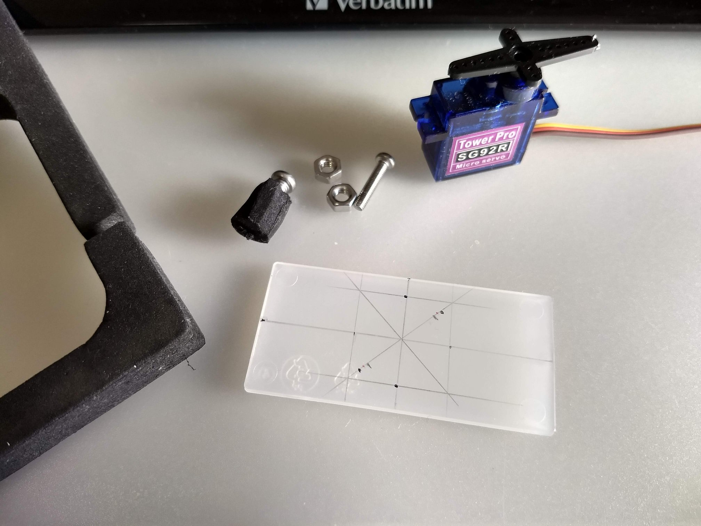
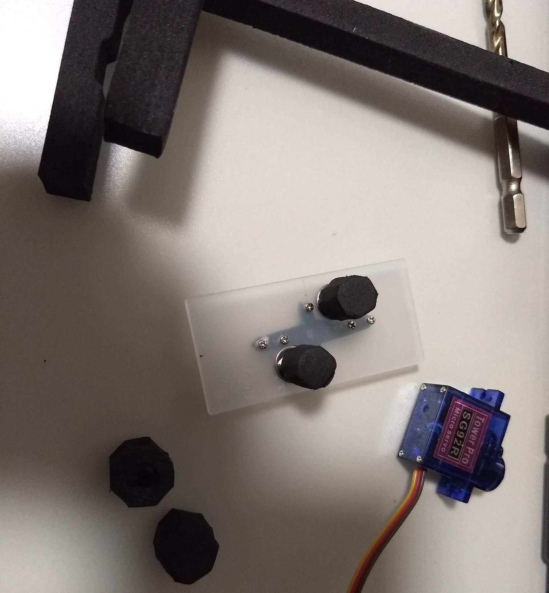
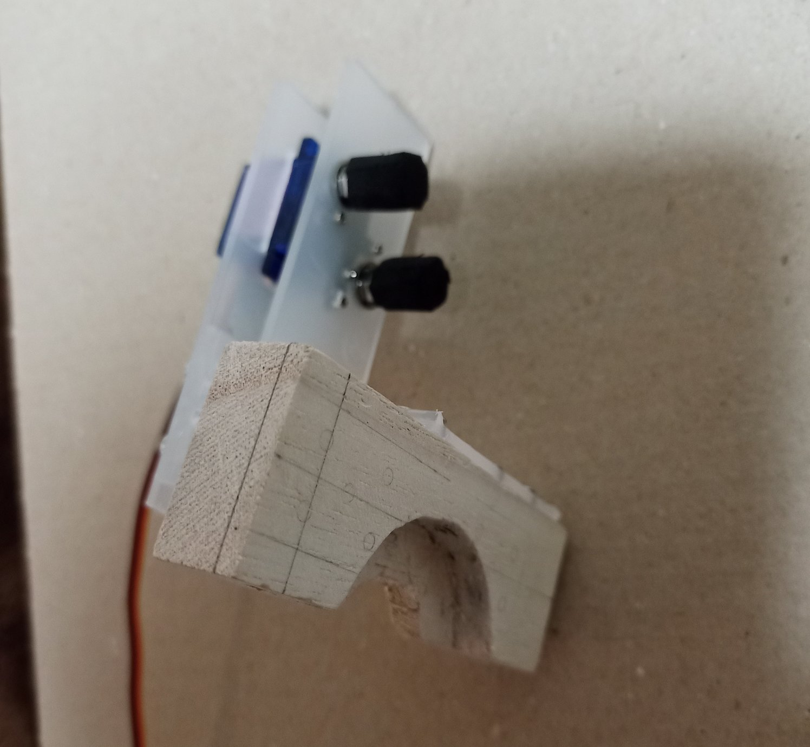
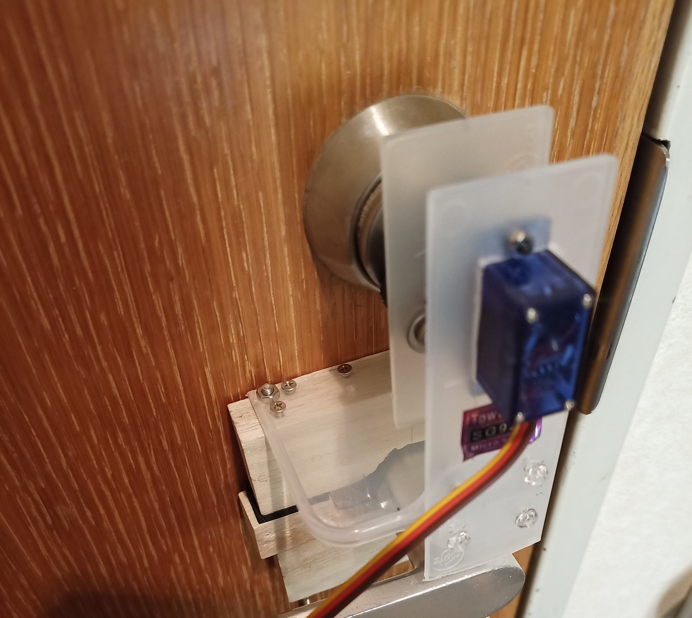
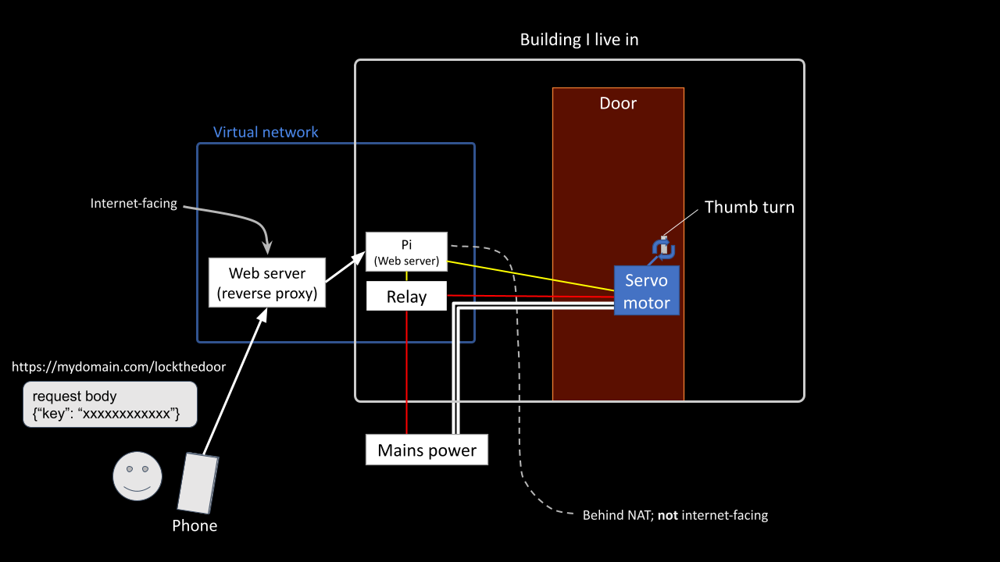

Introduction
Background
- A wide range of quality smart locks are available on the market (example)
- But what I wanted was a bit different from those in the example above. I wanted something simple and affordable. I do not need fancy features like biometric authentication.
- However, there is one thing I do not want to give up, and it's that I wanted a smart lock that runs on open-source software but I couldn't find any.
- Also there were a few specific requirements that had to be met to suit my needs.
- So I started to make my own.




Design Constraints
Living in an apartment (rent) with a limited budget, I realized that the lock had to meet the following design constraints.For those who are planning to build/buy something similar, the list here may help them determine whether the information on this page will be helpful.
- Can be built from readily and widely available components
- In other words, replacement parts shall be easy to obtain should something in the unit breaks.
- Does not require any permanent modification to the property
- For example, there shall be no need to drill a hole to the door, or to do anything irreversible.
- I can use the key to lock/unlock the door just the same way after the door lock system is installed (i.e. retrofitted)
- If the smart door lock stops functioning for whatever reason, I must be able to lock/unlock the door using the door key I have.
- Relatively low cost
- The total cost should be under 100 USD
- If there is a subscription/maintenance fee, it should be roughly under 25 USD per year
Current Status
For the moment (May. 2022), the unit is essentially a "remote" door lock.
That is, A. I can lock/unlock the door using my phone instead of the physical key,
or B. I can do so remotely to let someone in if I have a visitor.
So it means I have so far added one extra feature to the original system.
The long term plan: start adding "smart" features as I continue evaluating the reliability through daily use.
System Overview
Components
- A Raspberry Pi
- Model: Pi 3 Model B (other models of Pi will definitely work, e.g. Pi Zero W)
- A servo motor
- Use: for turning the thumb turn on the door. In terms of the lock/unlock operation, that is all this DIY door lock does at its most basic level.
- Model: TowerPro SG92R (any servo with similar specs should work)
- A relay hat
- Use: for switching on/off the power supply to the servo motor.
- Model: Electronics-Salon RPi Power Relay Board Expansion Module (any similar relay should work)
Building and assembling the unit
This part is not terribly technical or interesting, so I'll be brief. Bottom line: depending on the material of the door, the shape of the thumbturn, etc., retrofitting a unit like this might impossible in the first place. In my paritcular case, the wall(?) of the cylindrical base of the thumbturn was perpendicular to the door, and this made retrofitting possible. If that part was tapered (i.e. shaped like a circular truncated cone), this whole project would not have happened. That is all I need to say.Setting up hardware and software
1. Set up an internet facing proxy server
- As my ISP implements CG-NAT, there is no way to directly access the Raspbrry Pi in my room over the internet.
- So I span up a small instance on a cloud service provider and set up a reverse proxy on it. A smallest & the most affordable instance in any cloud service should be sufficient for this task. This instance is set up to be internet-facing so I can access it from my phone when I'm away from home. I'll simply call it VPS for the rest of this article.
- The IP address of the VPS is mapped to a domain that I own. This way, I can send http request over HTTPS; this is critical to secure lock/unlock requests. More on this later.
- All of this means that this DIY lock incurs what is effectively a "subscription fee" in 2 ways:
- VPS (approx. $30 / year)
- Domain renewal fee (approx. $16 / year)
2. Set up the Raspberry Pi
- First I set up a raspberry pi with a very standard configuration (Raspberry Pi OS 64-bit with SSH server enabled + pigpio & gpiozero libraries)
- Then set up an SSH tunnel on the Raspberry Pi to the VPS. This way, the https request that I send from my phone to the VPS can be proxied to the pi.
- Pi runs a simple web server and receives the http requests proxied from the VPS. It processes the requests to control the lock.
- Pi controls 2 hardware devices via GPIO pins, a servo motor and a relay hat, to lock and unlock the lock.
3. Send lock/unlock request over https
- The door is locked/unlocked via an http POST request sent from the user's mobile device (i.e. phone). There are currently 2 ways to send the http request from the phone.
- A user friendly way (primary): an Android app that I built for this project. The app has a simple UI consisting of 2 buttons: 'Lock' and 'Unlock'. All this app does is basically to send 2 kinds of https POST requests (for locking and unlocking the door) with the tap of the lock/unlock button, respectively. This is a very simple app, so the maintenance cost of this app should remain low for the foreseable future.
- A backup (plan B): the curl command from the terminal emulator app on Android (Termux)
- As a simple security measure, key (a string) is set to the request body and sent with the request. Pi verifies the key and if it determines that the key is correct, it performs lock/unlock operation, as described in the next section. Note that this is why https is nonnegotiable, which makes keeping the domain and paying for the renwals nonnegotiable as well.
4. Lock/unlock flow
- The user sends an https request to the VPS.
- The request is proxied to the Raspberry Pi in my room.
- The web server on the pi
- Switches on the relay (power is supplied to the servo motor).
- Turns the servo arm by 90 degrees (this locks/unlocks the key).
- Turns the servo arm by 90 degrees in the opposite direction.
- Switches off the relay (stops the supply of power to the servo motor).
Notes
Why bother switching on/off the relay every time the door is locked/unlocked
- So the problem was this: when the servo motor is connected to the power, it holds the position of the arm with its torque and this would get in the way if I try to lock/unlok the door using my key; the servo I chose is relatively small but it is powerful enough to block the turning of the thumbturn with the key. The easiest way to get around this issue is to ensure that the servo motor is connected to the power only when it's used to turn the thumbturn.
- To be honest, I know very little about servo motor and I'm sure that there is a better way, but this was the best I came up with.
- But being able to lock/unlock using the physical key, should the system stops working, is a mandatory feature; in theory, it would not be necessary if this DIY remote door lock works perfectly. But in practice, it will malfunction at some point in some way (it has), and the last thing I want is getting locked out.